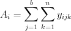
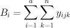
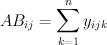
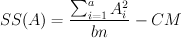
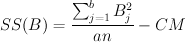
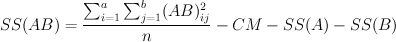
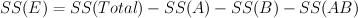
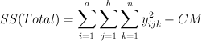
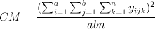

Two-way analysis of variance uses two factors to categorize data. It is used to test whether the factors have an effect and whether there is an interaction between the two factors.
Suppose we have the row factor A with a levels, the column factor B with b levels, and each treatment group of has n independent observations y.
| Factor B | |||||
|---|---|---|---|---|---|
| 1 | 2 | ... | b | ||
| Factor A | 1 | y111, y112, ..., y11n | y121, y122, ..., y12n | ... | y1b1, y1b2, ..., y1bn |
| 2 | y211, y212, ..., y21n | y221, y222, ..., y22n | ... | y2b1, y2b2, ..., y2bn | |
| ... | ... | ... | ... | ... | |
| a | ya11, ya12, ..., ya1n | ya21, ya22, ..., ya2n | ... | yab1, yab2, ..., yabn | |
Then the row sum is , the column sum is , and the cell sum is . The total number of observations (sample size) is abn. The number of observations for each level of A is bn, and the number of observations for each level of B is an.
The two-way ANOVA computes the sum of squares (SS), mean of squares (MS), degrees of freedom (DOF), F scores and p-Value for the two factors and the interaction between the two factors. SS, DOF, and MS are also computed for the within-group error.
| Source | DOF | SS | MS | F | p-Value |
|---|---|---|---|---|---|
| A | a - 1 |  | SS(A) / DOF(A) | MS(A) / MS (E) | 1 - CumulativeProbability(F, DOF(A), DOF(E)) |
| B | b - 1 |  | SS(B) / DOF(B) | MS(B) / MS(E) | 1 - CumulativeProbability(F, DOF(B), DOF(E)) |
| AB (interaction) | (a - 1)(b - 1) |  | SS(AB) / DOF(AB) | MS(AB) / MS(E) | 1 - CumulativeProbability(F, DOF(AB), DOF(E)) |
| E (error) | ab(n - 1) |  | SS(E) / DOF(E) | ||
| Total | abn - 1 |  |
CM (correction of the mean) is computed as .
To use this utility, you will need to provide all the observations in one column and their corresponding row factor and column factor labels in corresponding cells of two separate columns.
In the given drop-down menu, select the column contains the observations.
Select the column containing the row factor labels corresponding to the observations.
Select the column containing the column factor labels corresponding to the observations.